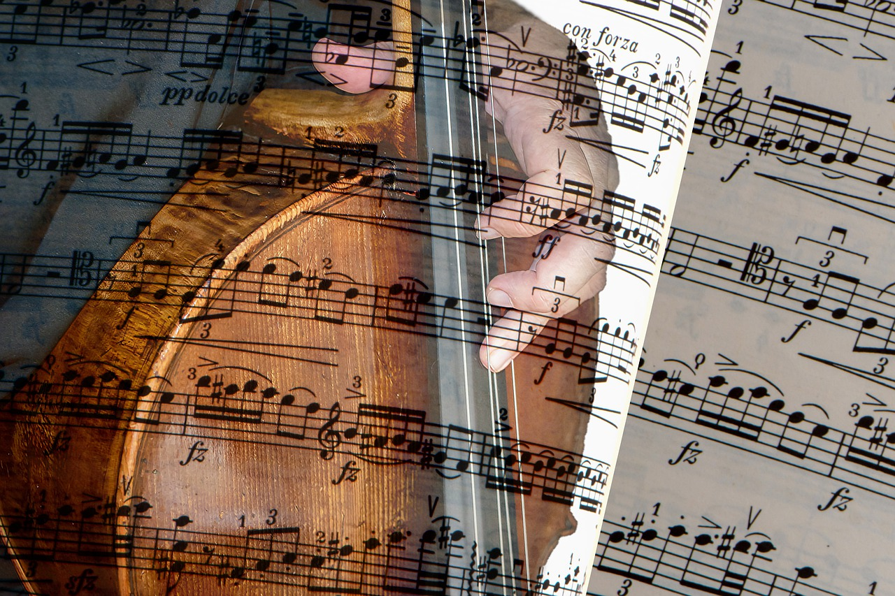

Escuchar Musica

El escuchar musica es una de mis actividades que mas realizo mientras hago tareas o haciendo otras cosas, tambien me ayuda a dormir y a pasar el rato de vez en cuando. tambien utilizo musica clasica para estudiar, la musica con violin y piano son de mis favoritas. los generos que mas escucho son:
- Pop Anglo
- EDM
- Alternative
- Musica clasica